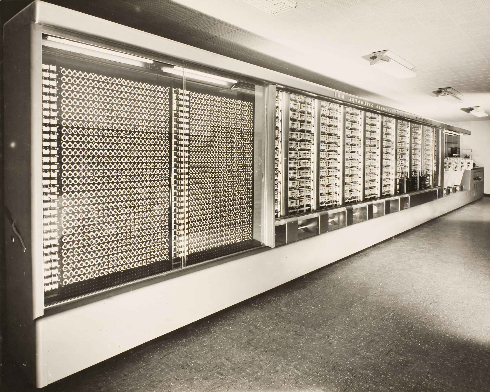
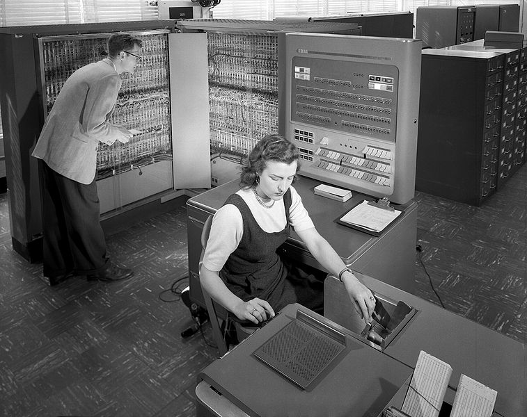

Las primeras computadoras
Durante el siglo XX comenzaron a aparecer las primeras computadoras electrónicas. Eran máquinas muy grandes, costosas y difíciles de utilizar, pero marcaron el comienzo de una nueva etapa en la historia de la informática.
ENIAC

La ENIAC fue una de las primeras computadoras electrónicas
de propósito general. Fue desarrollada en Estados Unidos
durante la década de 1940.
Era una máquina enorme que utilizaba miles de componentes
electrónicos. Ocupaba mucho espacio y consumía una gran
cantidad de electricidad.
UNIVAC

UNIVAC fue una de las primeras computadoras comerciales.
Fue creada para procesar grandes cantidades de información
y podía utilizarse en diferentes tipos de tareas.
Su aparición ayudó a demostrar que las computadoras podían
ser útiles fuera del ámbito exclusivamente científico.
Harvard Mark I

La Harvard Mark I fue una computadora electromecánica
desarrollada en la década de 1940.
Utilizaba una combinación de componentes mecánicos y
eléctricos para realizar cálculos automáticamente.
¿Cómo eran?

Las primeras computadoras eran muy diferentes de las que
utilizamos actualmente. Algunas ocupaban habitaciones
enteras y necesitaban equipos especiales para funcionar.
Además, tenían una capacidad de almacenamiento muy limitada
en comparación con los dispositivos actuales.
La programación

Programar las primeras computadoras era un proceso mucho
más complicado que en la actualidad.
Los programadores debían introducir instrucciones de manera
muy precisa para que las máquinas pudieran realizar las
operaciones necesarias.
Su importancia

Las primeras computadoras fueron fundamentales para el
desarrollo de la informática moderna.
A partir de ellas se comenzaron a crear máquinas cada vez
más pequeñas, rápidas y fáciles de utilizar.